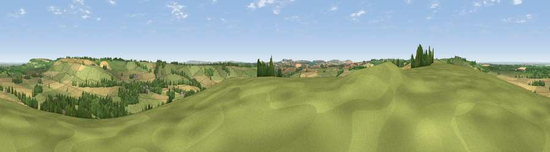

Viewpoint near Ogbourne St George
#8913 in England · top 13% of its area beats it · near Ogbourne St GeorgeWhere it is
The exact computed spot (SU 18812 74325). Click the marker for map links.
The view, rendered

A 360° render of this exact spot computed from the terrain model, tree cover and land cover — summer colours, afternoon light, calibrated against photographs of famous viewpoints. Real trees, hedges and buildings will differ in detail.
The panorama
Grey silhouette: terrain skyline in each direction (720 bearings, Earth curvature and refraction included). Dashed green: skyline with trees (+15 m) and buildings (+8 m) as obstacles. Blue strip: how far the ground is visible on each bearing.
Where the view opens
Wedge length = distance to the farthest visible ground on that bearing (vegetation-aware). Rings at 10, 25 and 50 km.
What fills the view
46% grassland · 39% cropland · 14% woodland · 2% built-up
Angular shares of the visible panorama (visual magnitude), not map area. Landscape diversity 0.46 (0–1 Shannon).
Key numbers
More beautiful places nearby
The staircase of upgrades: each row has a higher view potential than everything closer. Driving times are estimates from straight-line distance, calibrated against real road routing — check an actual route before setting out.
| Place | Direction | Drive | Score |
|---|---|---|---|
| Viewpoint near Broad Hinton | WNW · 5 km | ~12 min | 65.7 |
| Viewpoint near Liddington | NNE · 6 km | ~12 min | 73.4 |
| Viewpoint near Liddington | NNE · 6 km | ~13 min | 74.4 |
| Martinsell viewpoint | S · 11 km | ~20 min | 77.3 |
| Viewpoint near Nympsfield | NW · 48 km | ~68 min | 77.5 |
| Painswick Beacon | NW · 49 km | ~70 min | 79.6 |
| Viewpoint near Great Witcombe | NW · 50 km | ~71 min | 80.5 |
| Nottingham Hill | NNW · 58 km | ~80 min | 80.9 |
51.46758, -1.73057 · source: screening · position refined by local search. Computed location — check access rights before visiting.